맨 밑에 한짤요약 있음
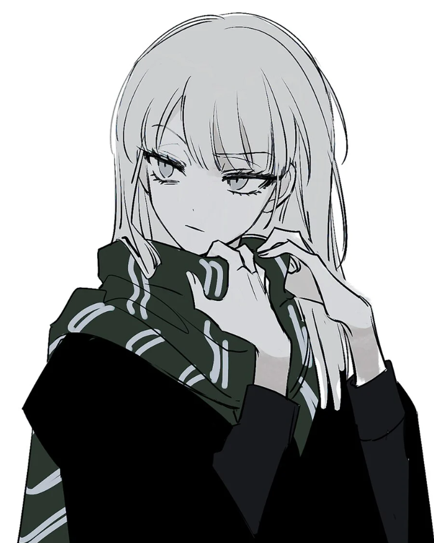
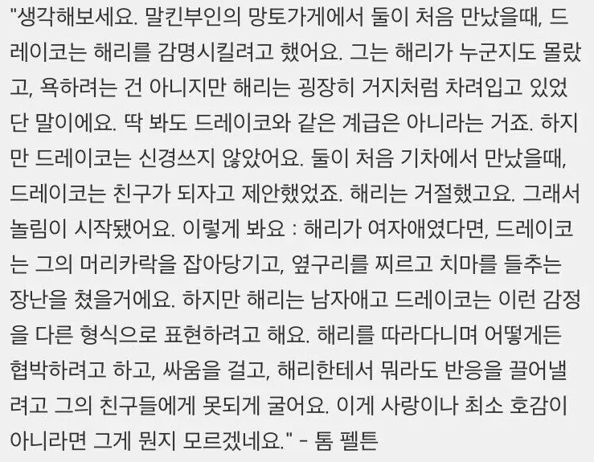
영화나 소설이나 꼬맹이 말포이는 나름대로 해리와의 첫 만남에서 호감을 표했음
근데 하필이면 그 태도가 더즐리를 떠올리게하는 철없는 부잣집 아들내미임
해리에게 제대로 밉상으로 찍힌 후 해리와 앙숙관계가 됨
근데 이걸 TS시키면?
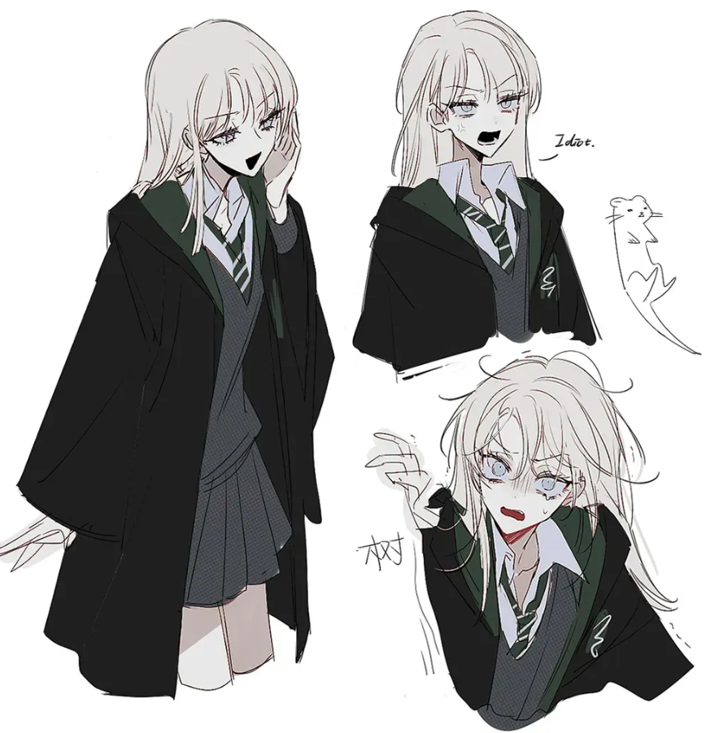
뭐겠음?
순수혈통 마법사 가문에서 오냐오냐 자란 고명딸과 주위에는 추종자들밖에 없었는데
해리가 나타나면서 '나에게 이런 남자는 네가 처음이야' 클리셰 들어가는거지
해리에게도 말포이는 처음으로 만난 또래 마법사 아이였음
그리고 말포이는 학교생활을 지내면서 해리에게 기숙사컵과 퀴디치컵을 털리고,
아버지가 이사직에서 쫓겨나게 되고, 팔이 썰리고 죽빵 쳐맞으면서도
포기하지않고 해리한테 시비를 걸고 털린다
말포이가 TS되면 이렇게 이 악물고 끈질기게 달려드는 행태는....
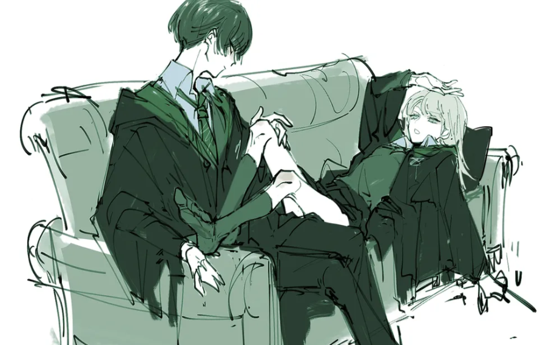
콧대높은 금발귀족악역영애 집착물 뚝딱 완성임
한 남자아이에게 굴욕당하고 거절당하더라도 계속해서 그의 관심을 끌고싶어 틱틱대는...
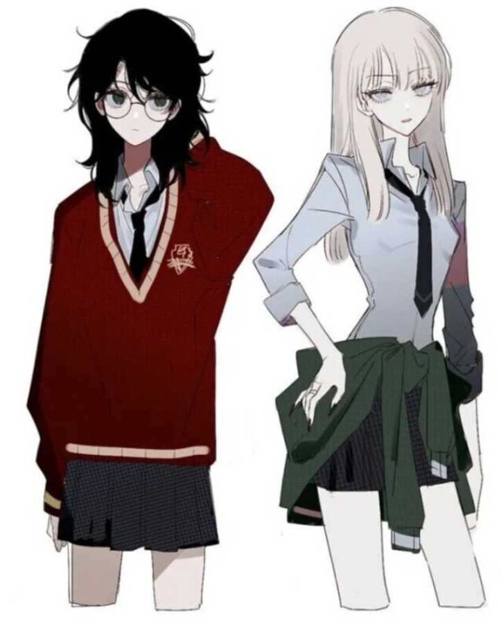
5권 불사조 기사단까지는 이러한 기조가 유지된다
하지만 6권 혼혈왕자로 오면 어떻게 될까?
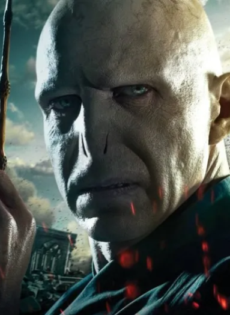
세상물정모르고 집안 빽만 믿던 양아치가 진또배기 사이코패스살인마한테 걸려서 일가족 몰살각 씨게 잡힘
이때쯤부터 멘탈이 쿠크다스마냥 바사삭 부서지기시작하는데
사실상 불가능한 임무를 받은 이 녀석이 자기를 도와줄 사람으로 누굴 생각하겠음ㅋㅋㅋㅋㅋㅋ
매년 실력인맥돈으로 패도 이기지 못하는 안경 쓴 그녀석 있잖아ㅋㅋㅋㅋ
" 어 나야 "
여기에 TS가 곁들여지면?
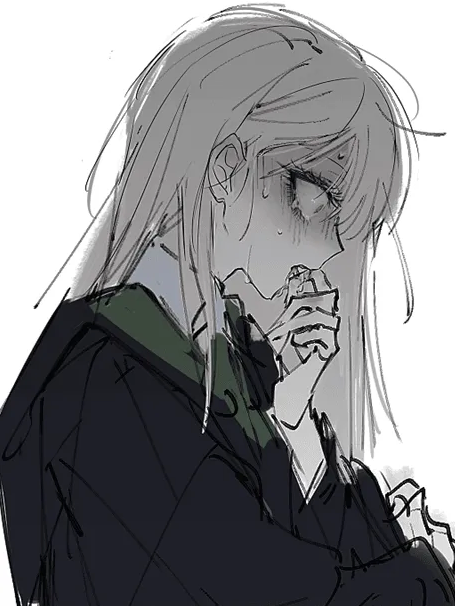
후회피폐집착물 뚝딱 완성임
정신이 극한으로 몰린 상황에 화장실에서 숨죽여 우는 모습을 들켜버린 금발악역영애 말포이양
그리고 그걸 목격하고만 정의로운 해리포터
해리입장에서 매번 쓰잘데기없는 시비를 걸던 녀석이 다크서클이 턱까지 내려올정도로 몰려있고
눈은 새빨갛게 부어오를정도로 울고있는 상황을 보게 된다면...
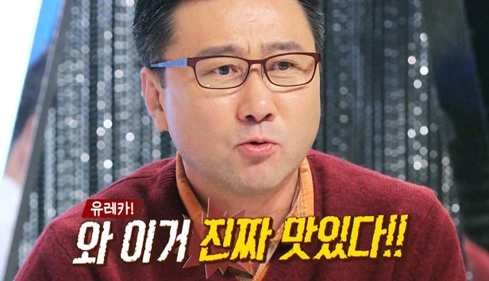
이건 "미식"임
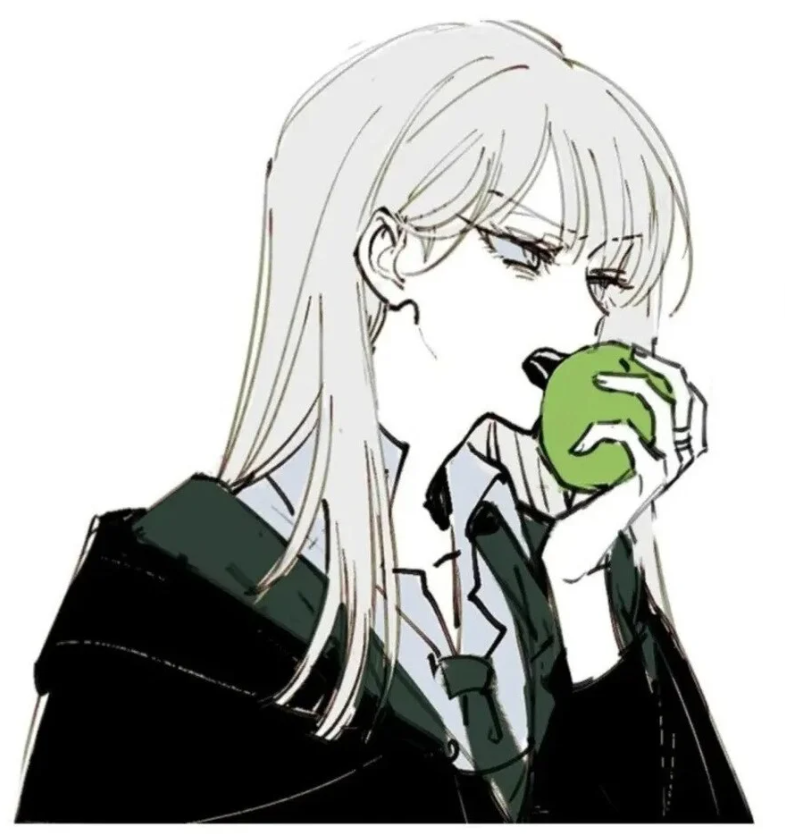
말포이가 TS가 된다면 본작의 모든 여캐를 압살하는 정실이 탄생하는거임
반박시 꼴알못
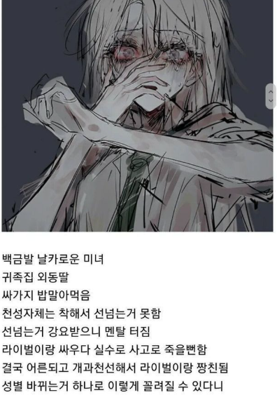
한짤요약
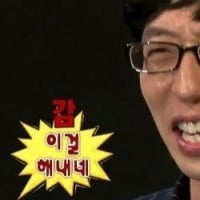